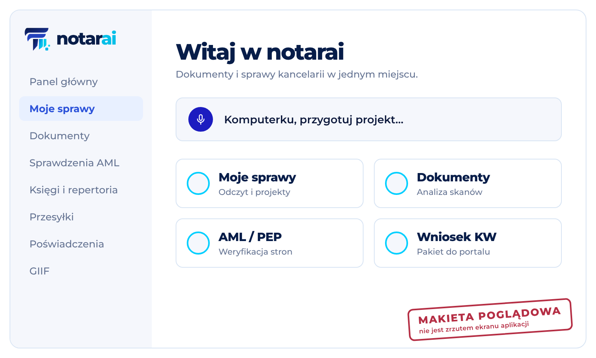
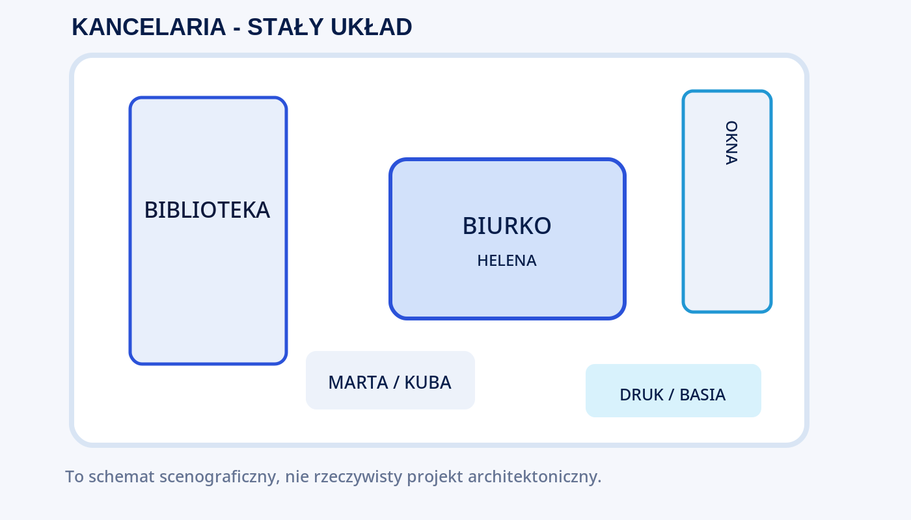
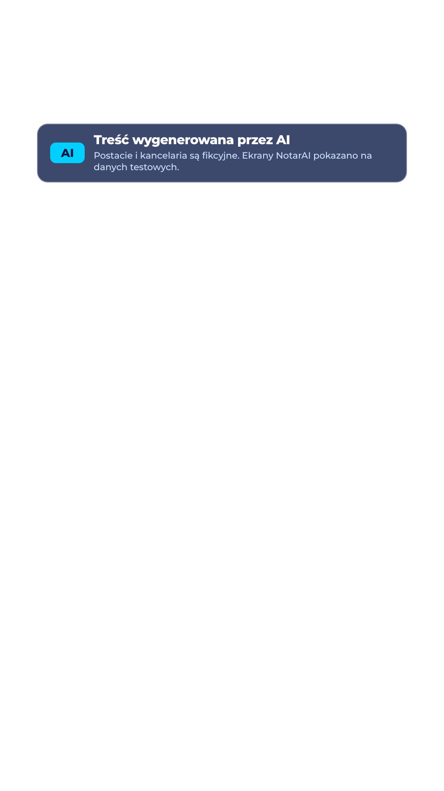

01. Główny kierunek
02. Wzorce i identyfikacja

Makieta UI
Koncepcyjne, nie rzeczywisty zrzutOtwórz grafikę
Stałe wnętrze
Ustalone rozmieszczenie elementówOtwórz grafikę03. Gotowe szablony formatów

Oznaczenie AI — pierwsze 5 s
9x16 · warstwa przezroczystaOtwórz PNG04. Dokumentacja
Obowiązujące reguły: Biblia wizualna · Biblia postaci · Prompty. Kod źródłowy logo jest w katalogu 01_marki.